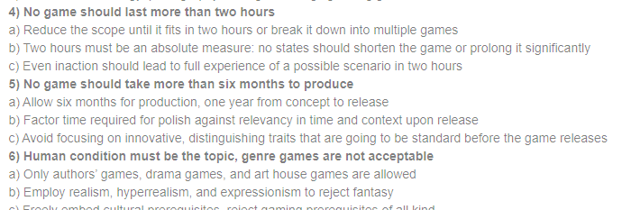
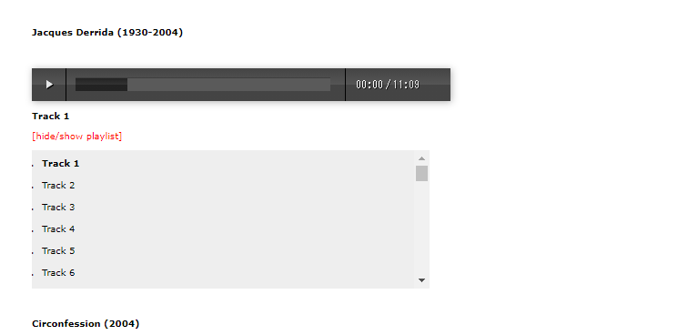
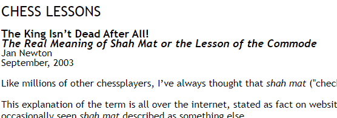

findings - another audio resource and other random information — 2020.10.19
Hello again! I've been working on a couple of large writing projects for a few months now, so I haven't been quite as active on this blog as I'd like to be. I'm back now though! thanks for sticking around. of course, I never really stop collecting findings, so here's some that I've had piled up for a few weeks now.
number one: rejecta.
I've been in love with this piece of writing ever since I discovered it a couple of months ago. pietro righi riva wrote this as a 'nontraditional playable media manifesto' and it serves as their guidelines for creating games.
I liked it so much that I decided to make something similar for my style of website design and development. it's finished, and I would link to it here, but I haven't come up with a catchy name for it yet! so it sits in my editor until I figure out what to call it. oh well. two hard things, right?
number two: tips for reverse engineering files.
this one was particularly interesting to me because I've been (slowly) working on a rhythm game whose file format is loosely based on that of bemani's format for storing song data. this project was actually my first time seriously reading a format spec for a reason, so I became pretty interested in learning how to reverse engineer files. in my quest for more knowledge, I came across this blog post by garret bates. I think it's a pretty interesting read, even if you only read file format specs for fun, like I used to (lol).
number three: ubuweb/sound.
this is a large archive of sound clips. according to the website, all clips 'are either out-of-print, incredibly difficult to find, or, in our opinion, absurdly overpriced'. this is an incredible resource for some really interesting audio.
you could use it for whatever, but I think strange and interesting vocal clips lend themselves really well to odd music sketches.
take a look at the clips and see what you can do!
number four: the meaning of shah mat.
having listened to shah mat by the musmus like a million times, I started wondering what shah mat actually meant. I was able to quickly find out that it was a chess term, and then eventually stumbled upon this great article by jan newton from 2003.
it's a cool bit of trivia — the type of thing that I love — and it might be interesting to you as well!
So I used to try force myself to work with these findings articles until I had at least five findings, but I think from now on I'll just write until I get distracted and leave the flow state. it feels better that way. thanks for reading, and I think I'll be back soon with something interesting!
currently listening to:
- スーパーヒーローミュージック by bish (I've listened to this like 100 times since it was released sixty-six days ago.)
- giant killers by bish (this too.)
- 1,000,000 watts by norma jean
- flim by aphex twin
- fly above -album extended- by sota fujimori